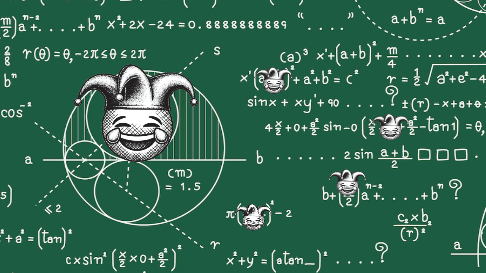
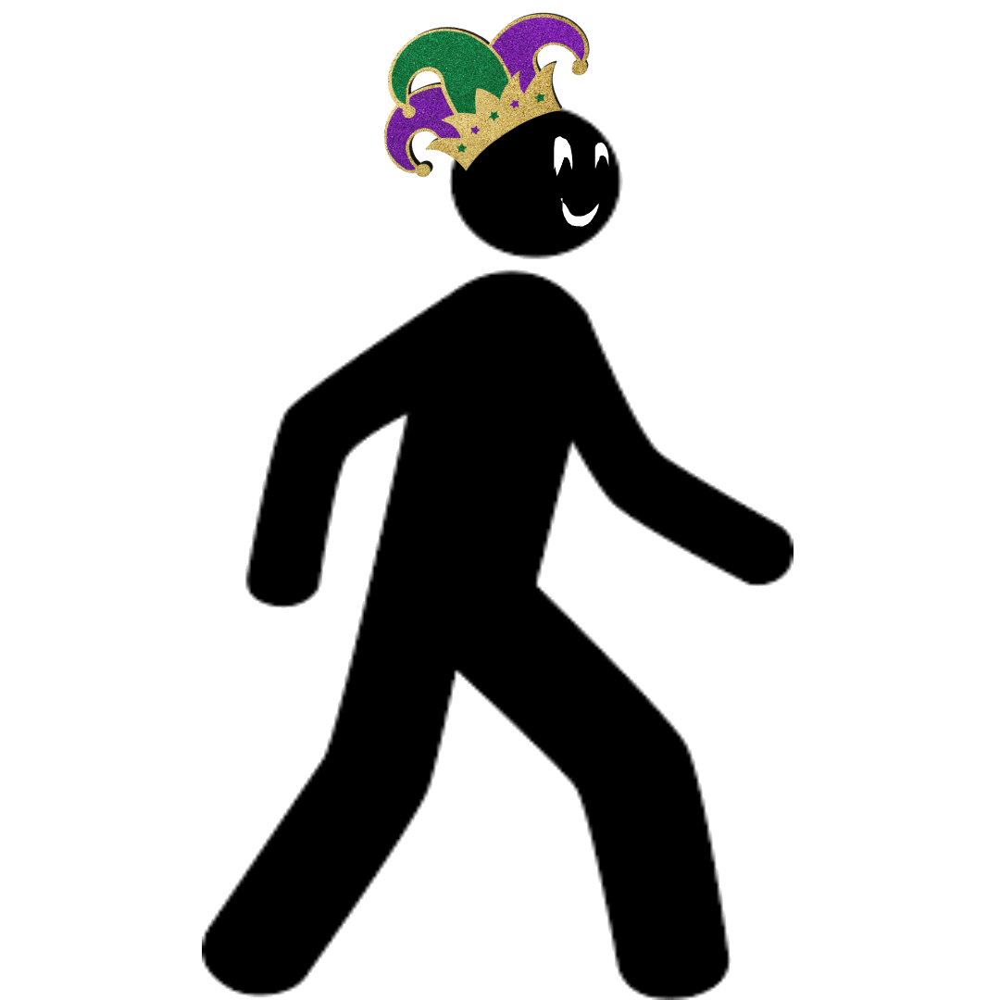
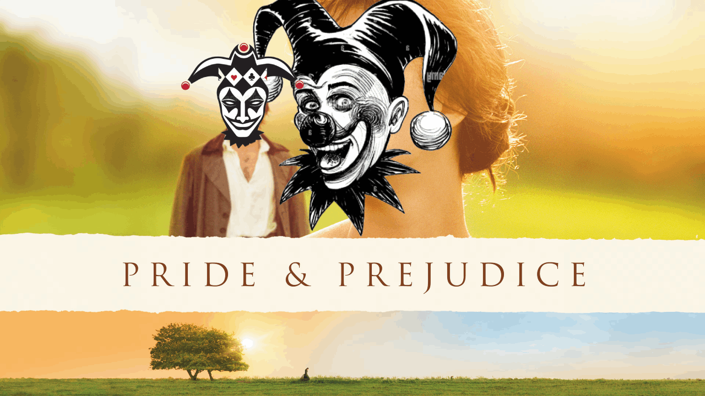
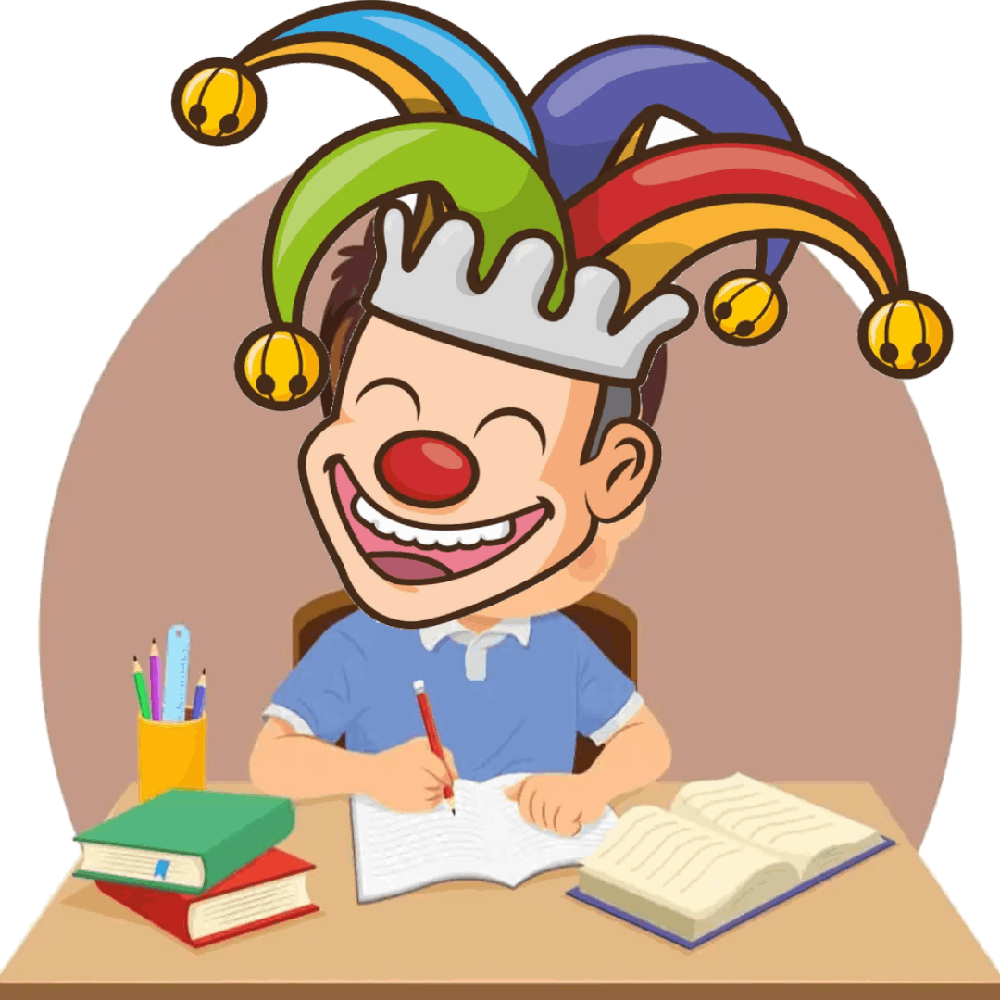
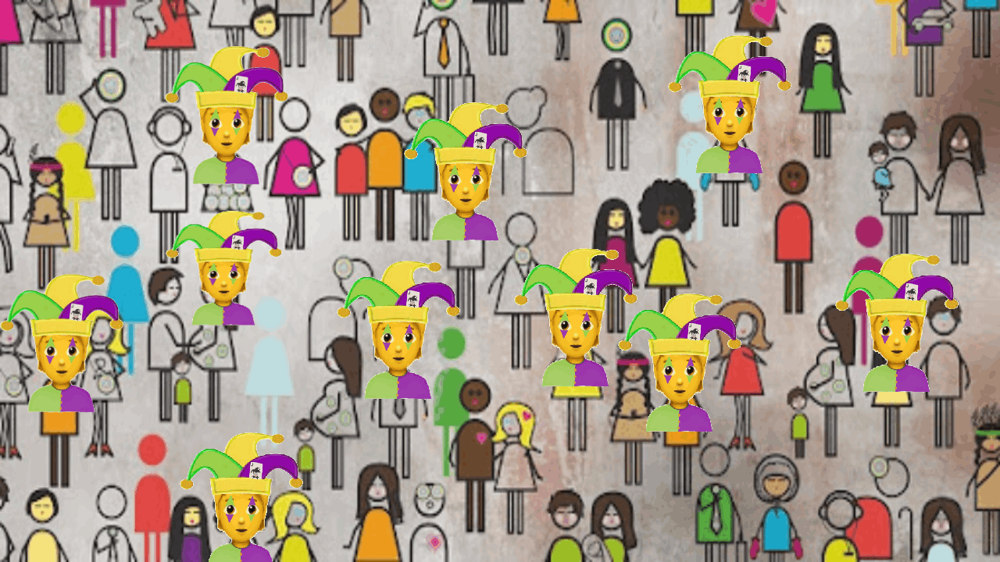
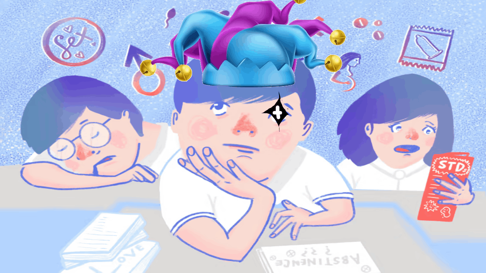
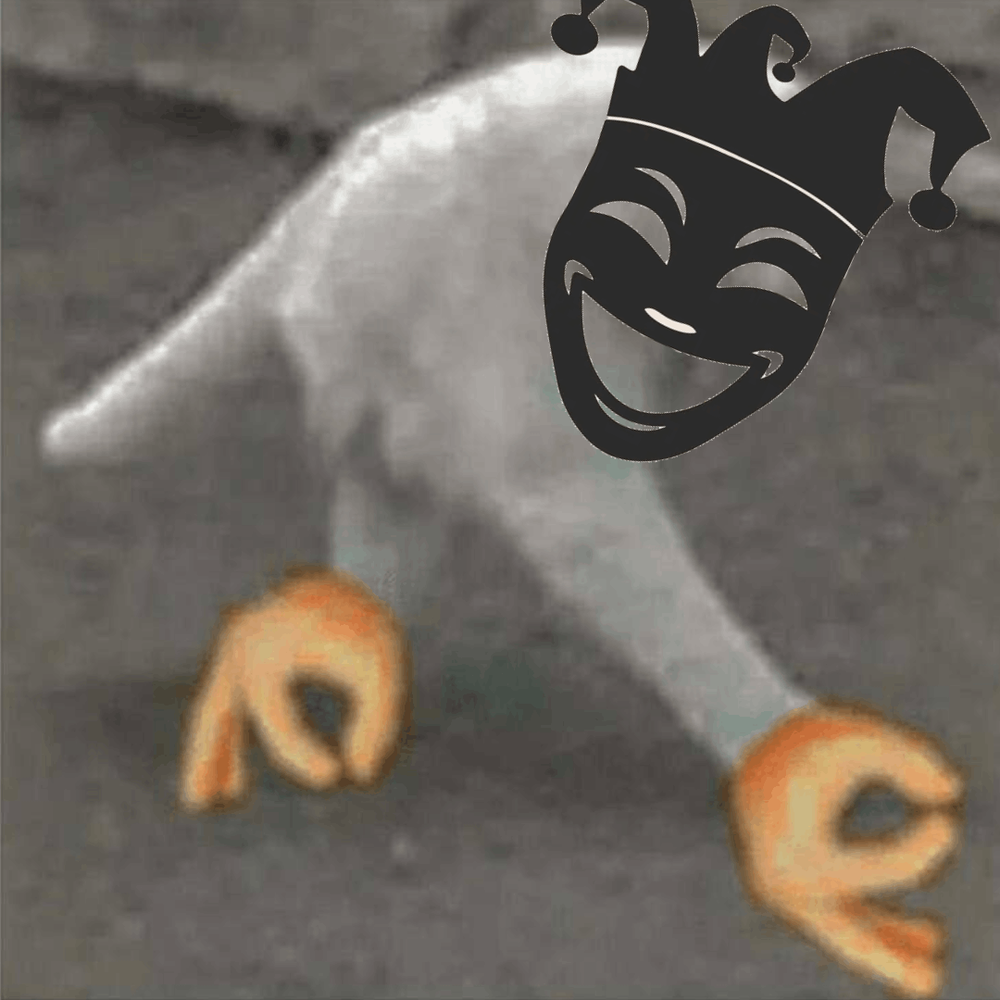
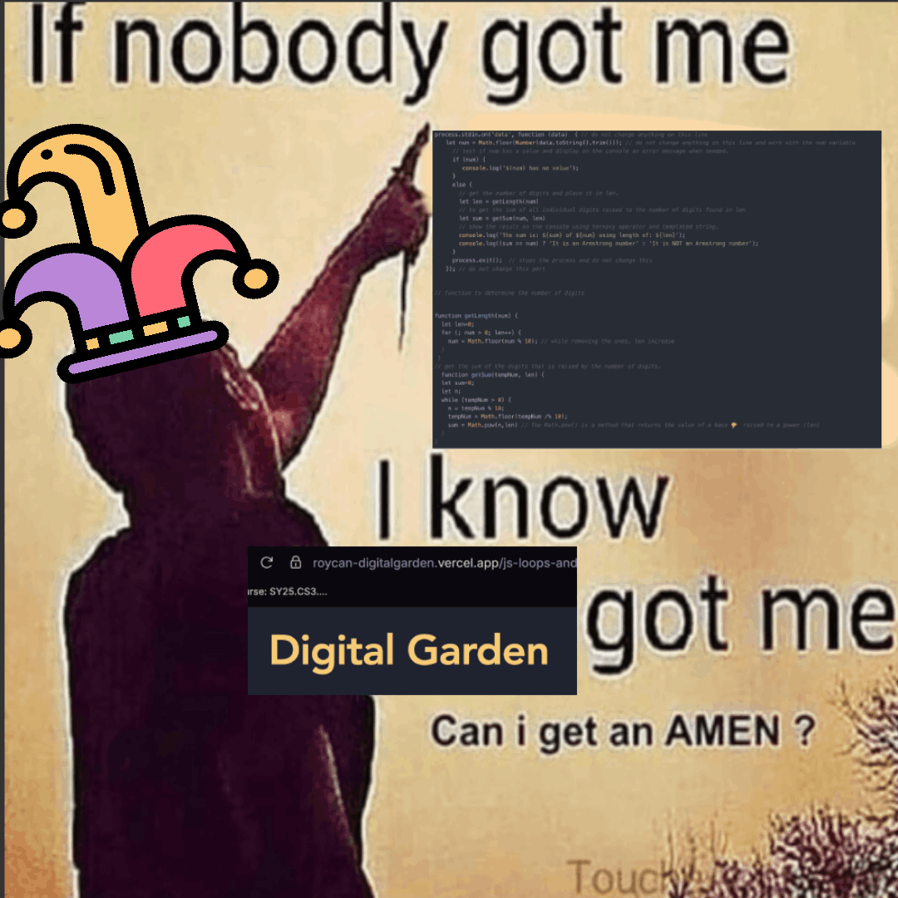
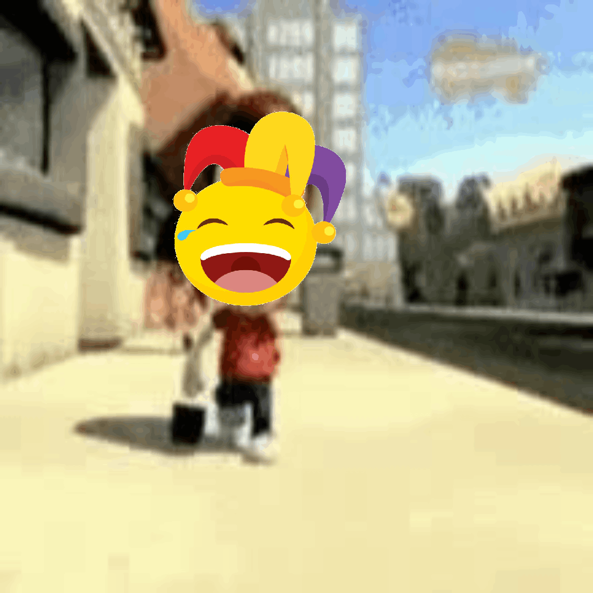
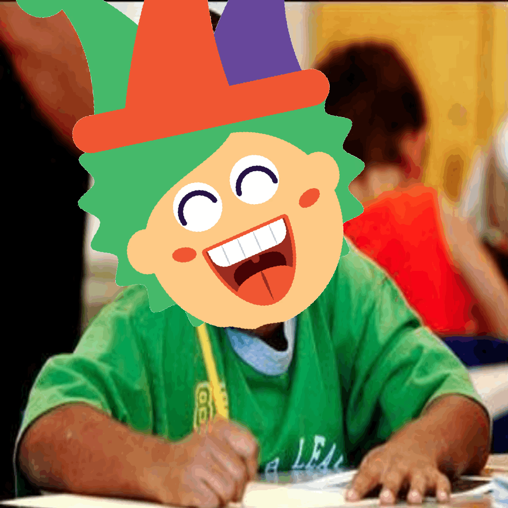

| ORAS | SuBjECt | KABOOM! |
|---|---|---|
| 7:10-7:20 | Start of School | |
| 7:20-7:30 | PHYSICS |  |
| 7:30-8:15 | ||
| 8:15-9:00 | ||
| 9:00-9:10 | OrAS paRa pUmuNta sa iKAlAWang asIGnatUra |  |
| 9:10-9:55 | English |  |
| 9:55-10:40 | StuDY pERioD |  |
| 10:40-11:25 | social science |  |
| 11:25-12:10 | HEALTH |  |
| 12:10-12:20 | going back to classroom kasi lunch na |  |
| 12:20-13:05 | LuNch | |
| 13:05-13:50 | COMPSCIIIIIII |  |
| 13:50-14:35 | ||
| 14:35-14:45 | Pupunta ulit sa homeroom classroom heh! |  |
| 14:45-15:30 | study period |  |
| 15:30-16:15 | Math | |
Feelings are mIxEd!
THE REAL QUESTION IS whether or not there are activities or quizzes. In my humble opinion, if there is an assesment, it lessens the fun factor, if not, the subjects and the teachers are extremely fun, making it bearable. Though it is kinda hard because two math related subjects are one the same day (Physics and Math) so a lot of preparation is needed to get throught the day. (But it's very comforting to know that Wednesday is tomorrow AHAHAHA!)